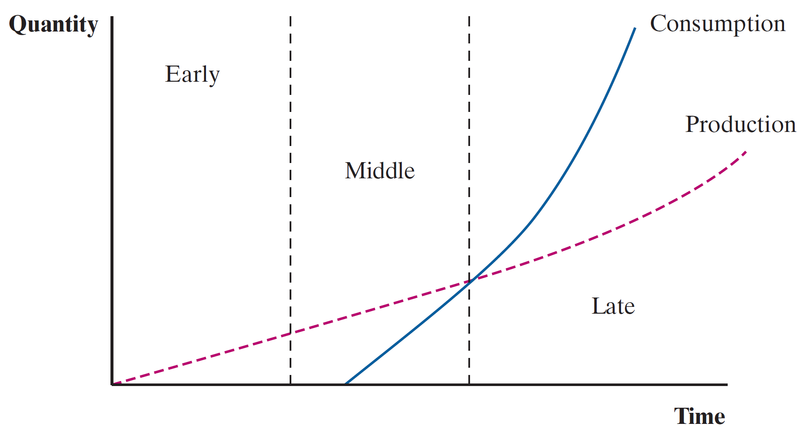

Empirical Tests
So far we have argued in-favor and against gains from trade exclusively from theory
You should always be skeptical and ask yourself two questions:
Do the predictions of generalized models hold in the real world?
Are there other reasons that these predicted patterns may be observed in the data?
A great deal of work that economists do is translating theory into empirical analysis
For example, Blonigen & Wilson (2008) examine whether port efficiency allows for greater volume of trade
Emperical Tests - Comparative Advantage
All trade theories come down to differences between countries that establish comparative advantages which motivate trade
Each theory predicts which goods a country will import and export
Empirical tests are difficult due to our inability to observe an ‘autarky’ counterfactual and difficulty in measuring factor endowments
Rather than going between extremes of no-trade to completely free trade, we normally imagine changes in trade openness as a result of:
- Lower tariff rates and reduced trade quotas
Theory vs Empirics
Ricardian Model
Challenging to test due to the assumption of relative differences in technology augmenting labor productivity
Most countries do not produce goods for which they are at a comparative disadvantage so there is no way to measure their productivity in those sectors
Findings
- As labor producitity in a particular industry rises, the intensive margin by which goods are exported increases. The country becomes a net exporter of that godo
The Ricardian model has been more frequently and succesfully tested
Theory vs Empirics
HO Model
- Even harder to apply tests due to challenges involved in accurately measuring factor endowments. Our measures of land and capital values are imprecise estimates
Findings
Cross-country measures of capital, land, and labor endowments are often measured using different means due to methodological differences across national accounting bodies
Even with these flaws, the HO Model is a useful starting point through factor endowments which can then be supplmented with other ideas
Useful way to categorize the income distribution effects of trade
Other important determinants of trade such as economies of scale, corporate structure, and economic policy are not considered in the model
Findings: Housing’s contributions to CPI is based on mortgage values in Europe while the US uses a rental-equivalence approach
Empirical Tests
So how do we address international economic theories when countries are all measuring our key statistics in different ways?
This normally requires an Non-Governmental Organization (NGO) or world body to apply data collection methods in a cross-country manner
For example, I used data from UN Comtrade which contained values of trade between countries at a detailed level
I complemented this with political manifesto data provided by the Comparative Manifesto Project in order to document how increased opennes to trade has shifted political leans in Costa Rica
Empirical Tests
Other differences between countries, beyond technology and factor endowments, that partly explain difference in trade flows across countries are:
Economies of Scale
Corporate structures
Economic policy
Public infrastructure
Institutional quality
Extensions to Trade Theory
Because of these empirical concerns and other key country-level differences, further extensions to HO have been developed
- Gravity Model
- Product Cycle
- Trade vs FDI
- Offshoring & Outsorcing
These provide theoretical settings which explain a portion of existing trade
Extension - Gravity Model
This model says that to explain how a country trades with other countries, we must factor in distance and size
The larger the other country is, the more demand it represents on the global market for a given good
The closer the other country is, the cheaper it is to access that market
\[ T_{ij} = \dfrac{GDP_{i}^{\alpha} * GDP_{j}^{\beta}}{D_{ij}^{\theta}} \]
Many empirical analyses leverage model specifications on these key factors, which explain much of the variation obseved in country-level trade flows
Extension - Gravity Model
Some examples to fix ideas:
Mexico’s most important trade partner is the US
- Distance: Share a border which means transport costs are less than, let’s say, Europe
- Market Size: US market is huge, and will absorb a lot of Mexican output
US trade with Korea vs trade with Japan
- Distance: Relatively same distance which means equal-ish transport costs
- Market Size: Japanese economy is larger which means more US goods enter Japan relative to Korea
Extension - Product Cycle
Explains exports of sophisticated manufactured goods from countries who are scarce in skilled labor and capital
Many manufactured goods go through product cycles where factor inputs change over time
Early/Development
Middle/Standardized
Late
Extension - Product Cycle
Early/Development
- Goods are produced with a lot of testing (in inputs and final form)
- Requires skilled labor to promote and develop product
- Consumers with higher incomes will be early-adopters and provide crucial feedback
Extension - Product Cycle
Middle/Standardized
- Product becomes standardized in characteristics and production process
- Shift production toward low labor cost nations
Extension - Product Cycle
Late
- Consumption in high-income countries exceeds production
- Production is concentrated in low-income countries as production process has taken form of assembly-type operations
- High-income countries need to innovate and restart the cycle in order to continue growth
Extension - Product Cycle
High-Income Countries

Low-Income Countries

The composition of factor inputs and cost minimization decisions by firms lead to relocation of production efforts, increasingly toward lower-cost labor nations
Trade/FDI
In the Product Cycle extension, firms invest abroad and some output generated is sent home for consumption
This is a great difference from the HO Model where no investment abroad is taken into consideration and factor endowments cannot cross countries
We can then introduce the concept of Foreign Direct Investment (FDI)
FDI suggests that cases may exist where firms elect to invest abroad rather than transport/ship goods abroad
Intrafirm trade is when these firms, with foreign affiliates, import outputs back home and it is handled by the parent firm
Extension - Offshore/Outsorce
Offshoring: Set up a plant abroad to produce goods
Outsorcing: Contract a different firm to produce goods for you. Can be international.
Modernization of the trade process has made these international features of production and distribution chains more feasible
Largely driven in the 1990s by internet availability, satellite communication, containerization of cargo and improved computing power
Easier to succesfully manage business operations abroad (marginal cost of multinational enterprise operations lower)
Extension - Offshore/Outsource
Effects include a trend toward international production, with comparative advantages across countries featuring in individual firms’ supply chains
Rather than specialize in goods, countries can specialize in key intermediate inputs
Trade economists refer to this as increased formations of global value chains
Many exports and local production processes now rely on the availability of imports
There is a huge vulnerability if ports become congested or delays occur